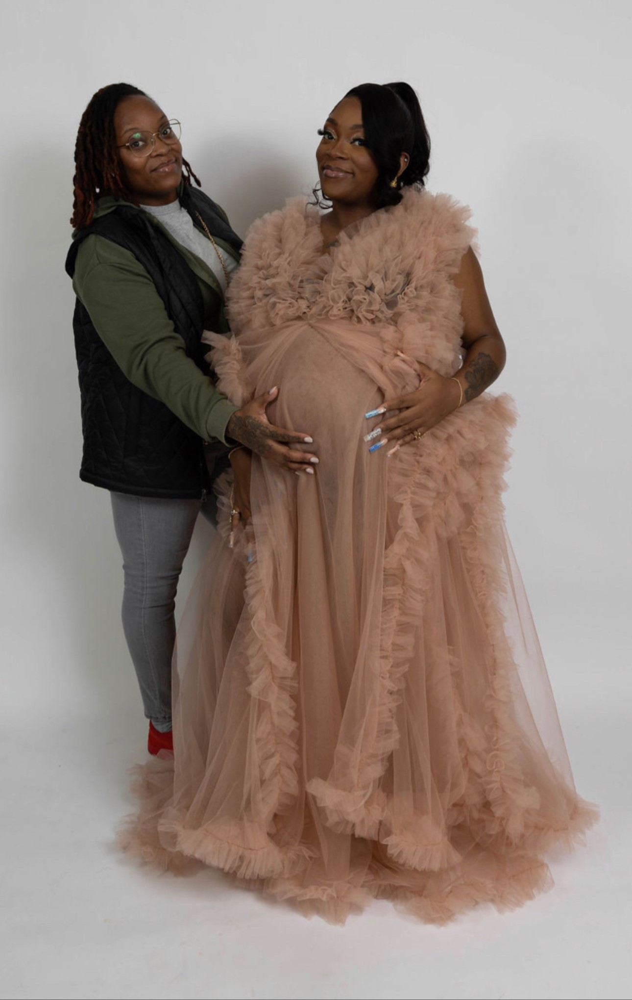
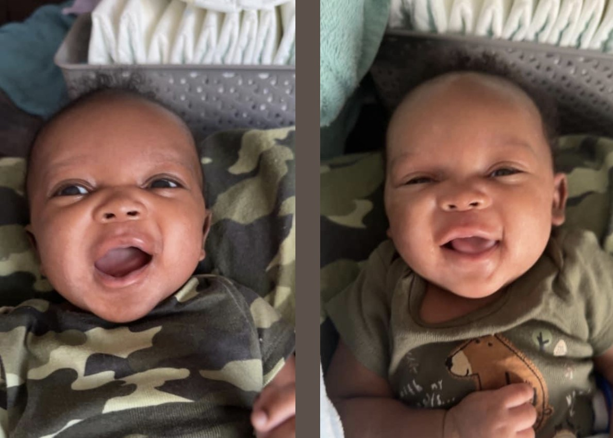

My Little family
The exciting part about being a twin is that i was blessed to have twins of my own. My sister has been there from day one just as excited about the fact that her twin sister had twins. My maternity photo shoot was everything i could ever imagined. And as you see my twin was my number one supporter.
Here is my two beautiful baby boys who are fraternal but to me they have a lot of similarities. Never could i have imagined it would be me that was having twins until this day. They are my two loves i always wished for. Even though i also have to girls my life is complete. Hello World meet Caiden and Jaiden, my fraternal twins.
